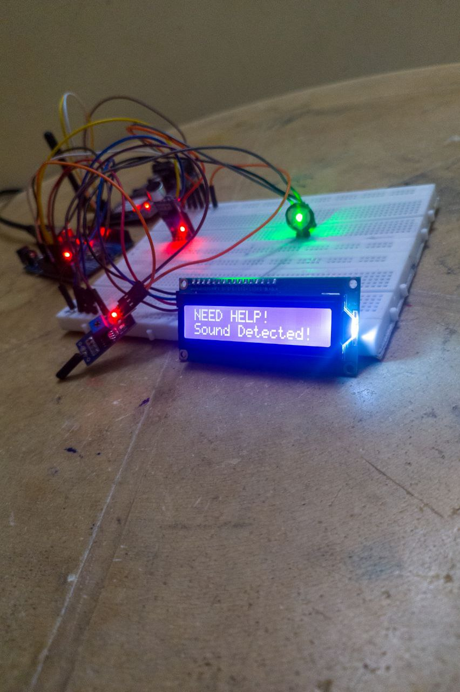
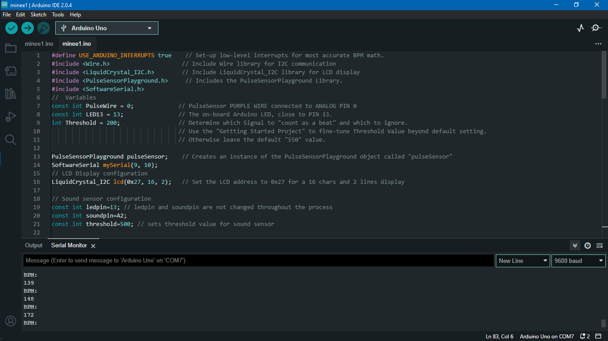

By using advanced sensors and machine learning algorithms, #Minee offers a cutting-edge solution for personal safety. Here are key features:
Adaptability: #Minee can adapt to the user's daily routine, learning and understanding patterns of normal behavior.
Keyword Detection: The smartwatch is capable of detecting keywords like "HELP" or "DANGER" in surrounding sounds.
Location Identification: It can identify new locations in real-time, providing instant alerts to potential threats.
Proactive Safety: Unlike traditional solutions, #Minee is proactive and doesn't rely on manual input or static data.
Sleek Design: With its sleek design, #Minee is not just a safety device but also an essential and stylish accessory.
Easy-to-Use Interface: The smartwatch provides an intuitive and easy-to-use interface, ensuring accessibility for all users.
Enhanced Security: Whether you're running, traveling alone, or walking home at night, #Minee adds an extra layer of security and peace of mind.

Problem Statement
Ensuring personal safety is a critical concern in today's society, where instances of crime, violence, and accidents are on the rise. Here are some specific challenges:
Versatility and Adaptability: Traditional safety solutions lack the versatility and adaptability needed to address the dynamic nature of potential threats.
Manual Intervention: Existing safety solutions often require manual intervention, which can be impractical and time-consuming in emergency situations.
Real-time Protection: The absence of real-time protection in traditional safety measures leaves individuals vulnerable to immediate dangers.
Limited Functionality: Current safety smartwatches have limitations in functionality, restricting their ability to provide comprehensive safety coverage.
Static Information: These devices often rely on static information, which may not adequately address the evolving nature of potential threats.
Manual User Input: The reliance on manual user input in safety smartwatches can hinder their effectiveness, especially in high-stress situations.
Environmental Adaptability: Existing solutions may struggle to adapt to different environments, diminishing their effectiveness in diverse settings.

Problem Solution
Addressing the complex challenges of personal safety requires a sophisticated approach. The #Minee smartwatch presents a comprehensive solution through the following key features:
Advanced Sensor Integration: #Minee integrates advanced sensors that monitor various aspects of the user's surroundings, including heart rate, ambient sounds, GPS location, and movement patterns.
Artificial Intelligence and Machine Learning: Leveraging cutting-edge artificial intelligence and machine learning technologies, #Minee's adaptive learning algorithms continuously analyze data to differentiate between normal and potentially dangerous activities.
Real-Time Alert System: The smartwatch's intelligent system provides real-time alerts in response to detected threats. This proactive approach ensures that users receive timely warnings, enhancing their ability to respond effectively.
Personalized Safety Coverage: Unlike generic safety solutions, #Minee tailors its responses to the individual user. This personalized approach enhances the effectiveness of the safety coverage, adapting to the user's unique needs and preferences.
Environmental Adaptability: #Minee excels in diverse environments, making it equally effective in urban and rural settings. Its adaptive features ensure that users receive optimal safety coverage regardless of their location.
User-Friendly Interface: The smartwatch is designed with a user-friendly interface, ensuring ease of use for individuals of all ages. Its intuitive controls and accessible features make it a practical and reliable tool for enhancing personal safety.
Sleek and Wearable Design: Beyond functionality, #Minee boasts a sleek and wearable design. Its unobtrusive form factor ensures that users can incorporate it seamlessly into their daily lives, making personal safety a constant companion without sacrificing style or comfort.
Continuous Innovation: #Minee is committed to continuous innovation, with regular updates and improvements to its algorithms and features. This dedication ensures that users benefit from the latest advancements in safety technology.